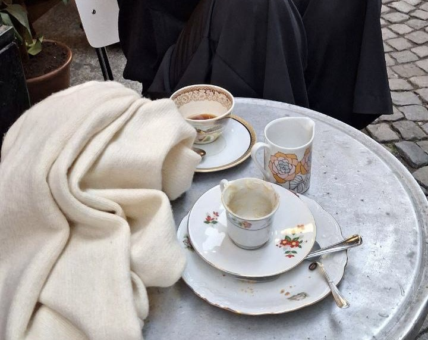
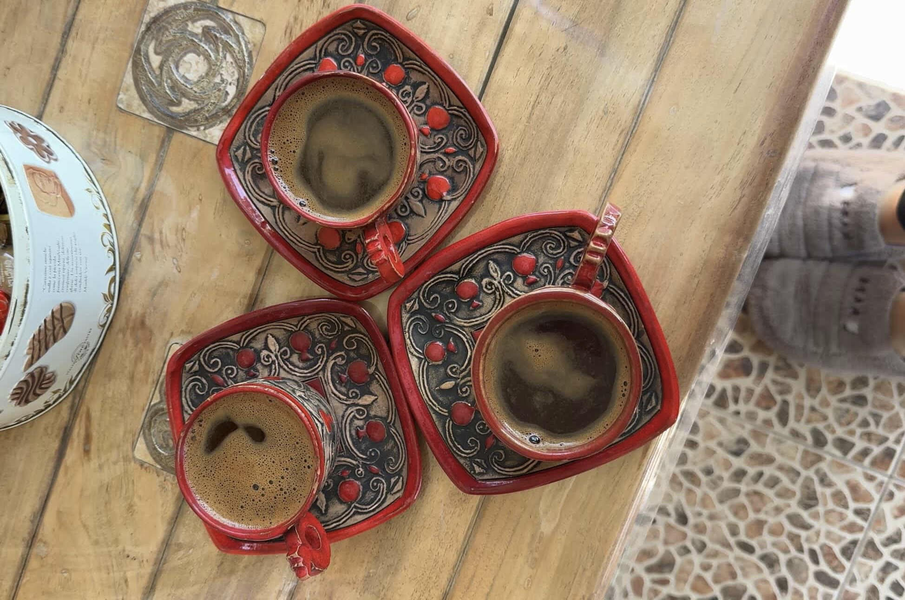
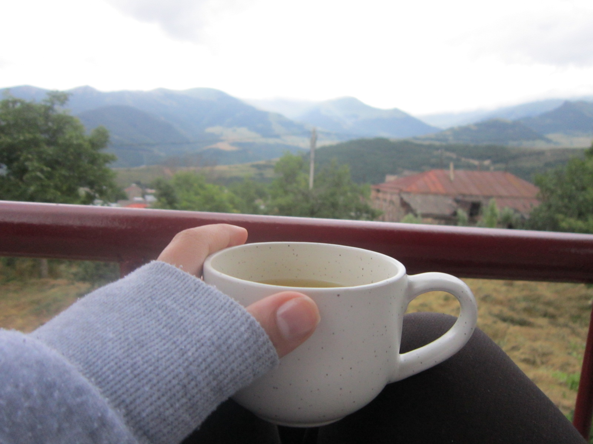
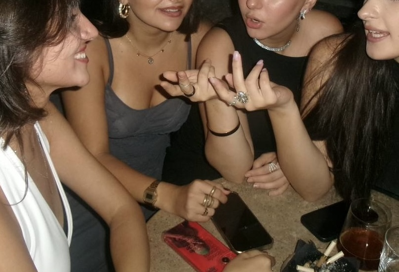
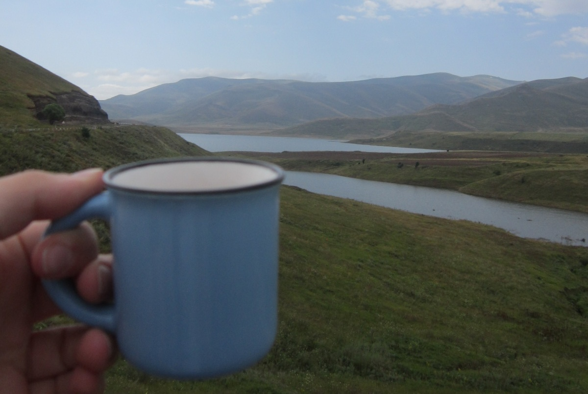
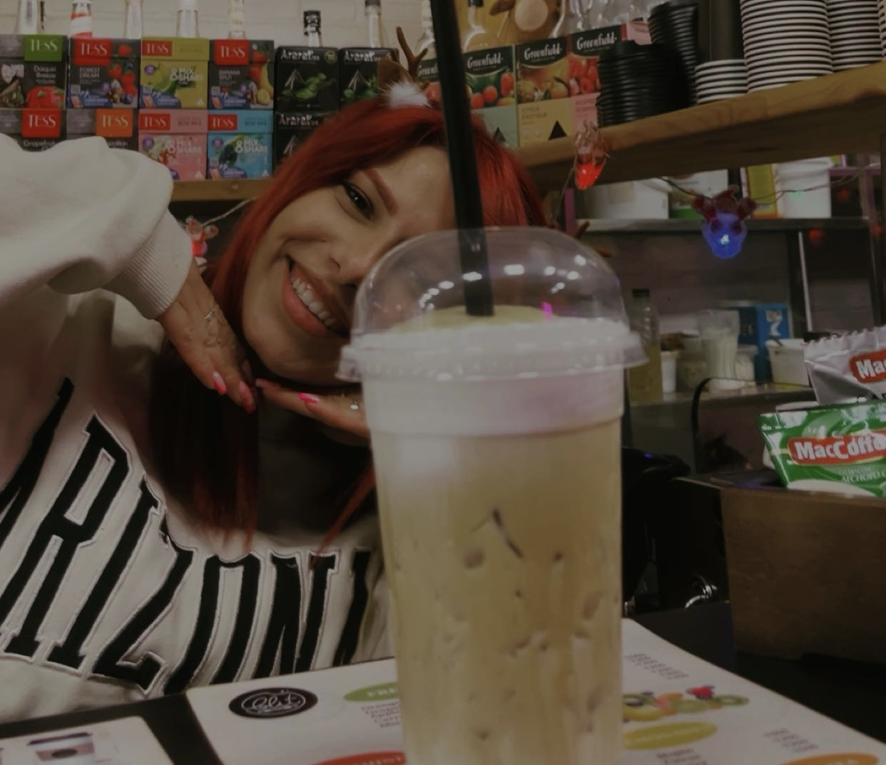
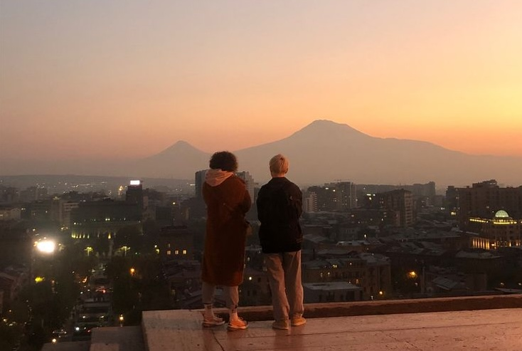
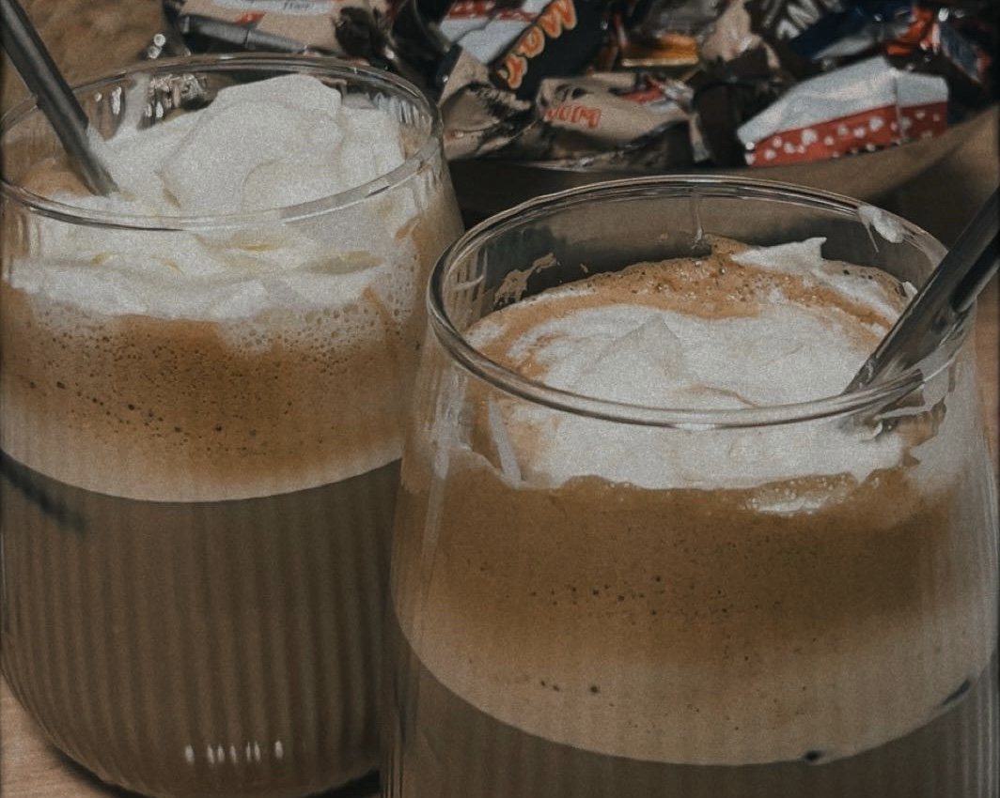

Moments where coffee feels special.

One of the most authentic experiences — drinking coffee with your neighbor, talking for hours, and sharing stories.

Coffee at home with family is warm and meaningful. It is part of daily life and connection.

Starting your day with coffee on the balcony — peaceful, quiet, and relaxing.

Long conversations, laughter, and gossip — coffee brings people together.

It will be one of the most epic moments in your life. I genuinely recommend it. If you have a chance do not miss it.

Pretty small cafe, but cozy and friendly staff. The place my friends and I often hang out. (Btw Saten makes the best coffees).

You will fall in love with the view. It is one of the most visited places in Yerevan and one of the favarite spots for Armenians and tourists as well.

If you ever visit Armenia you are very welcomed to my place to try one of the best ice coffees. But if you want to try sooner then np I enjoy making coffee for myself and if you want to join me I don't mind. (And don't forget gossips 🫢 JK).